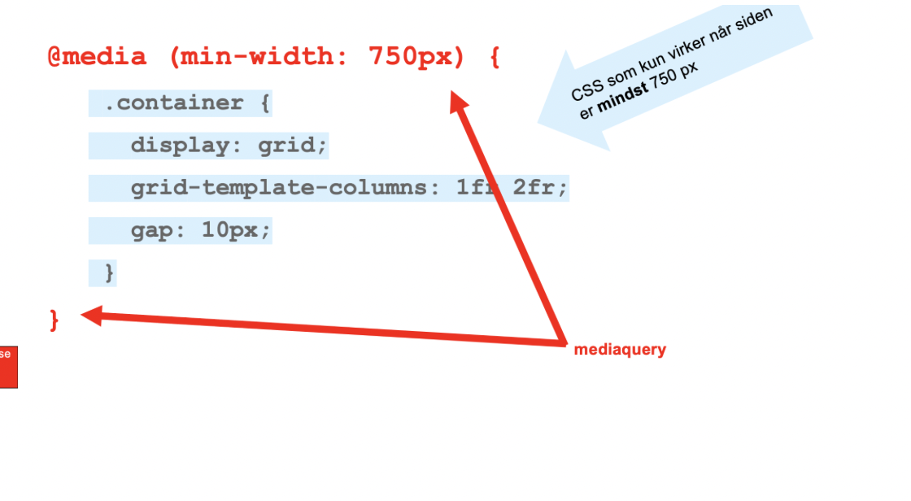

I begyndelsen af temaet blev vi introduceret til HTML (Hyper Text Markup Language), som er grundlaget for at lave hjemmesider. Vi lærte at bruge Visual Studio Code som editor og at oprette sider med korrekt HTML-struktur. Dette inkluderede brugen af tags og attributter, som giver elementer egenskaber. Eksempelvis bruges "p" til at definere afsnit og "h1"" til overskrifter. En vigtig del af undervisningen var at forstå “nesting,” altså den korrekte rækkefølge og lukning af HTML-tags. Vi fik også indsigt i, hvordan HTML-kode opmærker indhold, uden at definere dets udseende, og hvordan browsere som Chrome eller Firefox fortolker denne kode.
Efter introduktionen til HTML blev vi undervist i CSS (Cascading Style Sheets), som bruges til styling og layout. Vi lærte at oprette eksterne stylesheets, som linkes til HTML-filer, og hvordan CSS-selektorer anvendes til at style specifikke elementer. Dette inkluderer:
Vi blev introduceret til avancerede CSS-teknikker som shorthands, der gør det muligt at forenkle og samle flere deklarationer. Derudover lærte vi om viktigheden af en velorganiseret mappestruktur for at holde overblik over vores filer.